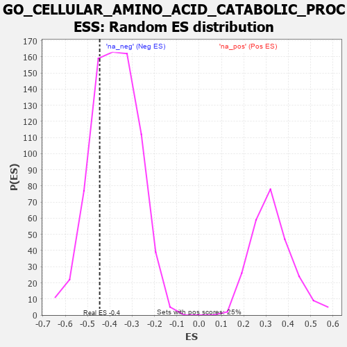

| | | Dataset | 7d |
| Phenotype | NoPhenotypeAvailable |
| Upregulated in class | na_neg |
| GeneSet | GO_CELLULAR_AMINO_ACID_CATABOLIC_PROCESS |
| Enrichment Score (ES) | -0.445712 |
| Normalized Enrichment Score (NES) | -1.1735846 |
| Nominal p-value | 0.28 |
| FDR q-value | 0.66456056 |
| FWER p-Value | 1.0 |
Table: GSEA Results Summary
 Fig 1: Enrichment plot: GO_CELLULAR_AMINO_ACID_CATABOLIC_PROCESS
Fig 1: Enrichment plot: GO_CELLULAR_AMINO_ACID_CATABOLIC_PROCESS
Profile of the Running ES Score & Positions of GeneSet Members on the Rank Ordered List
| PROBE | GENE SYMBOL | GENE_TITLE | RANK IN GENE LIST | RANK METRIC SCORE | RUNNING ES | CORE ENRICHMENT | | 1 | MTRR | | | 154 | 1.217 | 0.0770 | No |
| 2 | SDSL | | | 1137 | 0.456 | -0.0105 | No |
| 3 | GPT | | | 1488 | 0.392 | -0.0235 | No |
| 4 | HIBCH | | | 2031 | 0.301 | -0.0680 | No |
| 5 | PPAT | | | 3382 | 0.091 | -0.2306 | No |
| 6 | HDC | | | 4018 | -0.011 | -0.3097 | No |
| 7 | DDAH1 | | | 4056 | -0.016 | -0.3130 | No |
| 8 | HMGCL | | | 4141 | -0.031 | -0.3211 | No |
| 9 | GCDH | | | 4463 | -0.087 | -0.3547 | No |
| 10 | HGD | | | 4479 | -0.091 | -0.3494 | No |
| 11 | AASS | | | 4552 | -0.106 | -0.3501 | No |
| 12 | GCSH | | | 4633 | -0.125 | -0.3503 | No |
| 13 | BCAT1 | | | 4857 | -0.168 | -0.3650 | No |
| 14 | CBS | | | 4867 | -0.170 | -0.3526 | No |
| 15 | SARDH | | | 5229 | -0.252 | -0.3781 | No |
| 16 | IVD | | | 5767 | -0.396 | -0.4144 | Yes |
| 17 | CDO1 | | | 5892 | -0.432 | -0.3958 | Yes |
| 18 | PPM1K | | | 6097 | -0.506 | -0.3814 | Yes |
| 19 | OAT | | | 6293 | -0.572 | -0.3607 | Yes |
| 20 | ACMSD | | | 6367 | -0.603 | -0.3222 | Yes |
| 21 | KYNU | | | 6802 | -0.816 | -0.3122 | Yes |
| 22 | FTCD | | | 7055 | -0.970 | -0.2672 | Yes |
| 23 | TDH | | | 7077 | -0.980 | -0.1923 | Yes |
| 24 | HYKK | | | 7369 | -1.233 | -0.1313 | Yes |
| 25 | OTC | | | 7430 | -1.305 | -0.0355 | Yes |
| 26 | KMO | | | 7432 | -1.308 | 0.0678 | Yes |
Table: GSEA details [plain text format]

Fig 2: GO_CELLULAR_AMINO_ACID_CATABOLIC_PROCESS: Random ES distribution
Gene set null distribution of ES for GO_CELLULAR_AMINO_ACID_CATABOLIC_PROCESS